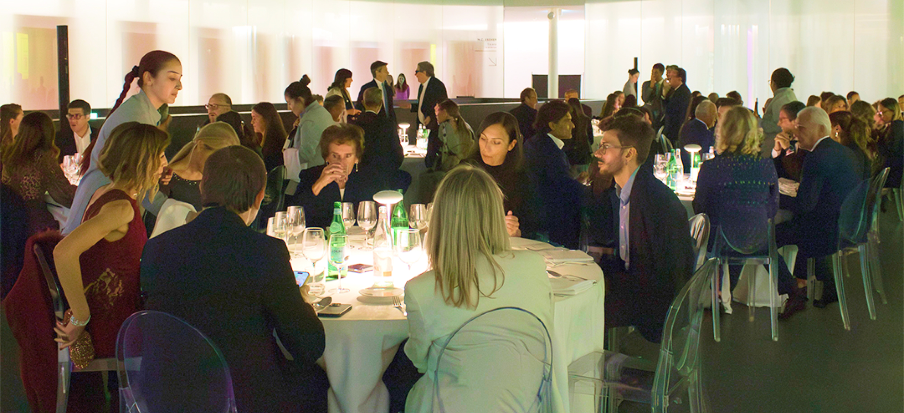
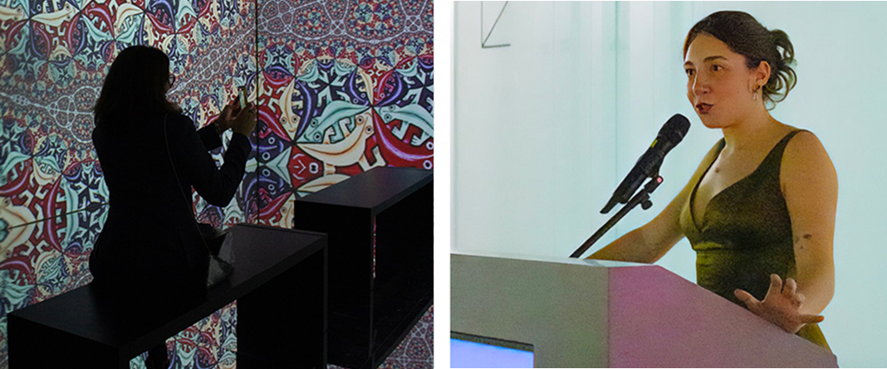

MUDEC Gala
The Art of Giving
Venerdì 3 ottobre 2025, nella cornice del MUDEC - Museo delle Culture di Milano, A-Tono ETS ha firmato il suo debutto pubblico con il Gala “The Art of Giving”.
Non solo un evento, ma un vero e proprio manifesto.
Un nome che racconta l’essenza della serata, capace di intrecciare arte, alta cucina e tecnologia per sostenere cause ad alto impatto sociale. L’idea è semplice e trasformativa: unire arte, relazione e tecnologia per tradurre la bellezza in impatto sociale concreto e misurabile.
Gli ospiti hanno vissuto un’esperienza fuori dall’ordinario: visita privata alla mostra M.C. Escher – L’arte e la scienza, seguita da una cena stellata firmata Enrico Bartolini, servita nell’Agorà del museo.
Il cuore della serata, però, non era nel programma, bensì nei due progetti presentati da Anastasia Granato, presidentessa di A-Tono ETS. Da un lato, la campagna abbonamenti “Un Bullone per rinascere” rivolta alle aziende per Il Bullone, il giornale che accompagna giovani colpiti da malattie oncologiche o autoimmuni in un percorso di rinascita attraverso la scrittura; dall’altro, un’installazione pubblica, “La Cabina Rosa”, dedicata alla prevenzione e al riconoscimento della violenza di genere, con un’azione di sensibilizzazione che promuove il 1522, numero nazionale antiviolenza e stalking.
Come ha ricordato la presidentessa Anastasia Granato, il dono è “arte delle connessioni”: tra tasselli diversi - persone, competenze, organizzazioni - che, accostati con cura, compongono un’immagine più grande.
A rendere “The Art of Giving” un modello unico nel suo genere è stata anche la tecnologia: sui tavoli infatti, i DropPOS A-Tono (terminali di pagamento contactless sviluppati dal gruppo) hanno permesso donazioni aggiuntive immediate, semplici e sicure, trasformando l’atto del donare in un processo più accessibile, naturale e diffuso.
